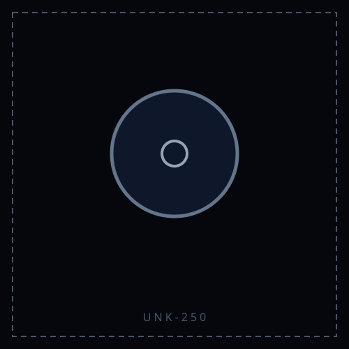
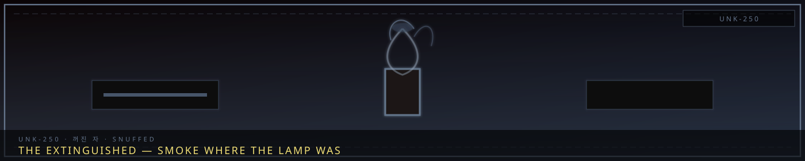
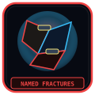
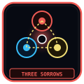

UNK-250Unclassified
STATUS: ARCHIVE VERIFIED |
CLEARANCE: LEVEL-4 OVERSIGHT |
PROTOCOL: REVERIE DIRECTORATE
ARTICLE
DISCUSSION
SOURCE
HISTORY
YEAR 4,238 · DAWN OF HOPE
UNKNOWN ENTITY
The Extinguished — 꺼진 자
“Not every sorrow has agreed to a name.”


WatchedNot yet a file
HanThe wound is realOverview
The Extinguished — 꺼진 자 is filed with the Unknown Entities — specimens that have SECC-shaped designations but are not among the thirteen public containment dossiers. The Archive treats them as real, named threats. They are not placeholders.
Unknown here does not mean “unwritten.” It means the specimen is not yet on the protected thirteen. Source dossiers live under 03_Unknown_Entities. Analog: a Distortion or unidentified Abnormality still gets its own article on Project Moon wikis.
Classification
| Designation | N-IVγ-250 [GS] |
|---|---|
| Coherence | Entity (IV) |
| Potency | Major (γ) |
| Element | Grudge (Crimson) |
| Manifestation | Subject-Body |
| Physical form | Mixed — A humanoid figure that was clearly once bright — the afterimage of a Hope Bearer, its edges still faintly gold, its core gone cold and crimson where the hope burned out. Fever-cold, it smells of char; a light that failed, walking. |
Appearance
Primary Form: A humanoid figure that was clearly once bright — the afterimage of a Hope Bearer, edges still faintly gold, core gone cold and crimson.
Notable Features: - It reaches toward any Hope light, then flinches back, expecting it to go out. - It does not attack the hopeless — it walks past them; it only tests those who carry hope. - Frost patterns on the ground spell, in Old Somnarak, the same word over and over: again?
- Entity Type: Subject
- Manifestation: Subject-Body
- Primary marker: A humanoid figure that was clearly once bright — the afterimage of a Hope Bearer, edges still faintly gold, core gone cold and crimson.
- Position / movement: The subject manifests independently within the registered area; posture and distance must be recorded.
- Element signature: Grudge
- Registered location: A decommissioned Dawn shelter, outer Zone D; drifts the district it once lit
Origin
- Formation: A Hope Bearer was stationed in outer Zone D for three years, holding the district's sorrow; overused, the Bearer burned out, and the hope died.
- The Sorrow: The Grudge of lost hope — worse than never having hoped, because now the district knew what relief felt like.
- The Event: The Bearer's final night: the light went gold, then white, then out; the sorrow returned in one wave, sharpened by three years of relief, and crystallized into a figure that hated the memory of the light it had loved.
- The People: The district that relied on the Bearer, and the Bearer who was spent; the shelter-matron Saetris Nunvia (새트리스 눈비아) keeps the records.
- Expanded origin context: The Extinguished is the warning the Dawn Initiative carries: hope given without teaching people to carry their own weight becomes a dependency, and a dependency that breaks becomes the worst sorrow of all — one that knows exactly what it lost.
Behavior
Work Type responses are not standalone data. Read them against the SECC Classification and element — the same gauge change means different things at different tiers. the entity's classification. The Extinguished is recorded as a Subject with Subject-Body manifestation and Grudge elemental expression. The current record places it at A decommissioned Dawn shelter, outer Zone D; drifts the district it once lit; personnel should not transfer assumptions from another entity with a similar name. A stable gauge does not necessarily mean a safe encounter: observation may leave the gauge unchanged while still exposing the worker to memory, environmental, or identity effects.
Return to Unknown Entities. SECC decoding: SECC classification.
CANONICAL CROSS-LINKS